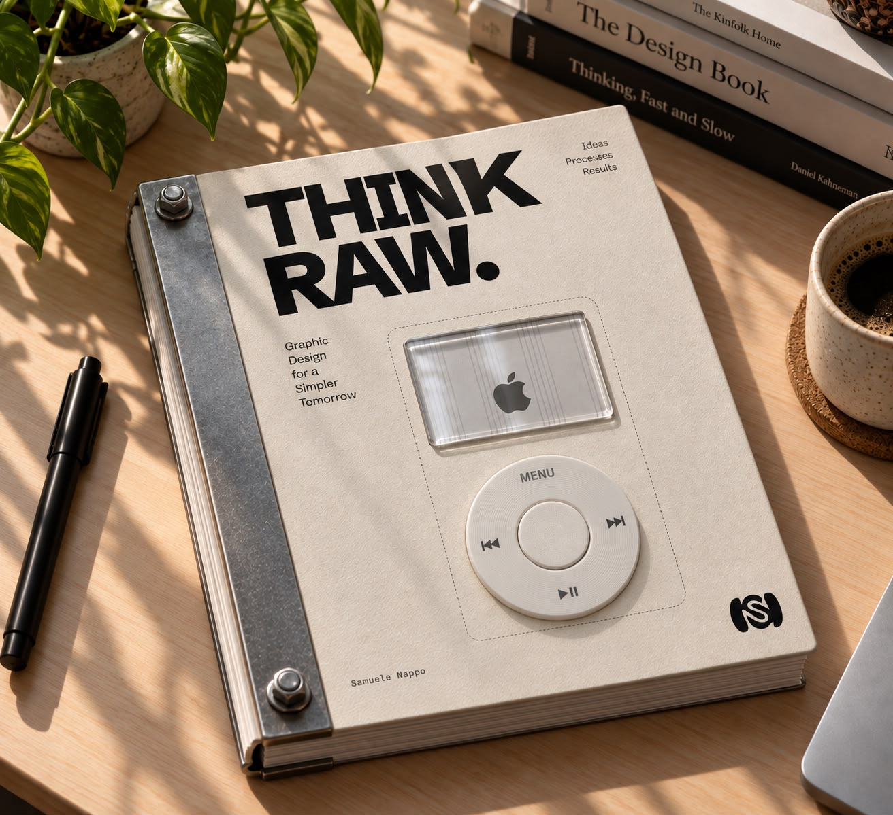

Libro-oggetto
Graphic Design 2
Samuele Nappo
Scorri
La perfezione è un prodotto. Esce da una fabbrica, uguale a un milione di altre. Noi cerchiamo il resto: la grana, il segno, l’errore che rimane. Smontiamo l’oggetto perfetto per vedere cosa c’era dentro. Pensa grezzo.
pp. 01
Scorri per sfogliare

THINK RAW. · Graphic Design 2
Il resto del libro
arriva presto.
Questa è un’anteprima: mostra come si sfoglia, non tutto quello che c’è scritto. Le pagine vere — testi, tavole, processi — si aggiungono qui, spread dopo spread.